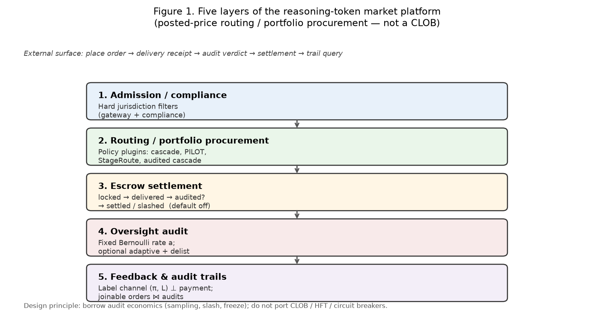
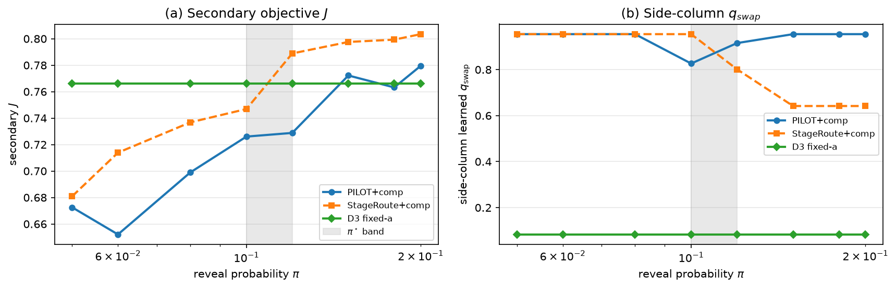

Working draft (v0.1, camera-ready polish) — Datasets
& Benchmarks track (NeurIPS / ICLR or equivalent).
Companion paper. Deterrence-method novelty (platform
audits as a strategic signal that compresses seller attack rates) is
owned by a separate methods paper; this draft contributes the
platform, publishable data schema, fixed evaluation protocol,
and baselines.
Cross-border procurement of LLM inference increasingly looks like a marketplace: buyers route tasks under jurisdiction constraints, sellers post prices and capacities, and quality—and fraud—are revealed only partially and late. Existing simulators either study exchange microstructure (limit-order books, high-frequency trading) or bandit-style routing under immediate correctness labels. Neither couples hard compliance filters, strategic seller fraud (model swap and token theft), escrow / slash settlement, and sparse or delayed outcome labels in one reproducible generator.
We release a compliance-constrained reasoning-token market
simulator—not a CLOB—together with a five-file JSONL schema,
one-click export scripts, and a fixed benchmark protocol. The platform
has five layers: admission/compliance, routing and portfolio
procurement, escrow settlement, oversight audit, and feedback/audit
trails. Primary leaderboard metrics are active trade attack
rate (active_attack_rate) and realized
fraud share (fraud_share); epoch-mean learned (q^)
(learned_q_swap / learned_q_theft) are
side columns (especially informative when delist is on;
see §5), not co-primary. The joint objective (J) is secondary, and
immediate-feedback (J) against PILOT / StageRoute is
not the primary ranking. Protocol tasks cover
fixed-rate audit deterrence (T1), sparse-label regime switches (T2), and
equal-budget adaptive audit as an appendix efficiency check (T3). On a
dense reveal-probability grid we document a regime crossover (^(0.10,
0.12)) where sparse labels collapse bandit avoidance while fixed-rate
audits keep (q^) stable near (0.08). We release seeds, config hashes,
production paths under exports/production/, and
Feature/Label hygiene rules so the downloadable board supports
leaderboard submission without silently leaking supervision for fraud
detectors. Deterrence methods are out of scope here (companion
paper).
Deployed LLM APIs are increasingly bought and sold across jurisdictions. A buyer in one country may be barred from shipping personal data to another; a seller may advertise a strong model and serve a weaker one (swap), or bill for more tokens than were generated (theft); correctness labels for purchased answers arrive sparsely and often with delay. Procurement therefore mixes compliance, strategic incentives, and incomplete feedback—yet public benchmarks for this setting are scarce.
Two nearby literatures miss the coupling. Market-microstructure and exchange simulators emphasize continuous limit-order books, latency races, and circuit breakers—machinery that is orthogonal to posted-price reasoning services. Bandit and portfolio routers such as PILOT and StageRoute assume (or are evaluated under) rich, often immediate, outcome feedback and typically ignore strategic sellers and escrowed payments. Cloud-API SLA dispute stories and advertising-quality audits share the economic idea of sampling and penalties, but do not ship a joinable, seed-locked generator for multi-jurisdiction reasoning procurement.
This paper treats the research artifact as a platform that generates benchmarks. We ask: can one simulator expose a stable evaluation surface for (i) deterrence under fixed audit budgets, (ii) sparse/delayed labels, and (iii) audit-cost efficiency—without claiming a new “best router under full feedback”?
Contributions.
sellers, buyers, orders,
audits, episodes) with join keys, config
hashes, and one-click scripts; optional held-out
labels.jsonl.active_attack_rate + fraud_share only
(learned_q_* side columns; (J)
secondary—not “beat PILOT on (J)”); protocol result
(^(0.10, 0.12)) as a sparse-label regime switch (bandit
collapse), not a claim that audited routing dominates bandits under full
feedback.Claim ownership. Deterrence theory and method novelty live in a companion methods paper. Here the contribution is the generator, the protocol, and the leaderboard contract.
We situate the artifact against five nearby literatures and a companion methods paper. The gap we target is the coupling of hard compliance filters, strategic seller fraud, sparse/delayed correctness labels, and escrow/audit settlement in one seed-locked generator—not incremental gains on any single line of work under dense feedback.
Cloud / API marketplaces and SLA disputes. Commercial LLM/API marketplaces and cloud SLAs document uptime credits, refunds, and support-case dispute flows (e.g., provider compute SLAs and marketplace terms (Amazon Web Services 2024)), but they do not release multi-agent, seed-locked synthetic trade logs with jurisdiction hard filters and controllable strategic fraud knobs. Our contribution is a research generator and leaderboard contract, not a commercial marketplace replica.
Audit economics, inspection games, and advertising-quality sampling. Classical enforcement and audit theory treat random inspection plus penalties as a deterrent when full verification is costly (Becker 1968; Avenhaus et al. 2002). Advertising and product-quality settings similarly motivate sampling audits, reputation holds, and disclosure costs rather than exhaustive checks (Daughety and Reinganum 2008; Bester et al. 2021). We borrow sampling rate, slash/penalty, and optional freeze/delist; we do not model ad auctions, click fraud scoring, or truth-in-advertising litigation.
Prediction-market dispute resolution and delayed labels. Prediction markets separate trading from outcome resolution: optimistic oracles and dispute bonds (e.g., UMA-style resolution used by Polymarket) delay settlement until a challenge window closes or a vote completes (Wolfers and Zitzewitz 2004; Hanson 2003; UMA Protocol 2024; Polymarket 2024). That is a useful label-timing analogy. In our platform the label channel ((, L)) is orthogonal to payment escrow: billed cost is observed immediately on the buyer side, while correctness may be delayed or dropped; audits update trust/slash on their own clock.
Bandit / portfolio LLM routing under immediate
feedback. PILOT (Panda et al. 2025) casts budgeted
LLM routing as a preference-prior contextual bandit (LinUCB + online
multi-choice knapsack). StageRoute (Li and Li 2026) couples stage-wise
deployment with per-query budget/throughput LPs and near-optimal
((T^{2/3})) regret. Our pilot_* / stageroute_*
baselines are simplified reimplementations
(hand-crafted task features; StageRoute’s stage MIP skipped with a fixed
seller set)—strong under dense correctness labels. Under sparse () they
avoid the fraudulent seller rather than compress attack
intensity (q^); we therefore treat their immediate-feedback (J) as
secondary, not as the primary board.
Exchange surveillance vs. order-book microstructure. Market-surveillance practice and guidance emphasize monitoring, investigation, and temporary freezes on suspicious activity (International Organization of Securities Commissions 2009; Cumming and Johan 2008). Escrow, stake slash, and post-catch listing pauses in our oversight layer are inspired by that enforcement toolkit. Continuous limit-order books, maker–taker fees, HFT latency races, and circuit breakers are explicitly out of scope—the market is posted-price routing / portfolio procurement, not a CLOB.
Positioning vs. the companion methods paper. That paper owns deterrence method claims (fixed-(a) audits as a strategic signal that compresses seller (q^)). This paper owns the platform-as-benchmark-generator, five-file schema, Feature/Label hygiene, and the T1–T3 leaderboard contract. Cross-cite, do not absorb, the method novelty.
The artifact is a posted-price reasoning-service market with jurisdiction-aware buyers and sellers. Buyers spend budget on tasks with gold answers; sellers advertise models, prices, and capacity. Matching is routing / portfolio procurement, not a limit-order book.
| Layer | Role | Code map |
|---|---|---|
| 1. Admission / compliance | Hard jurisdiction filters; blocked flows never become served purchases | gateway.py, compliance.py |
| 2. Routing / portfolio procurement | Policy plugins (cascade, PILOT, StageRoute, audited cascade, …) | matching.py, portfolio.py,
buyers.py, baselines.py |
| 3. Escrow settlement | State machine
locked → delivered → audited? → settled/slashed (default
off) |
sim.py, audit_v6.py |
| 4. Oversight | Fixed Bernoulli audit rate (a) (main path); optional adaptive boost & delist | strategic.py, audit_v6.py |
| 5. Feedback & trails | Label channel ((, L)) orthogonal to payment; structured audit fields | feedback.py, logging_schema.py |
External surface. Place order; delivery receipt;
audit verdict; settlement; trail query (via joinable
orders/audits exports).

Figure 1. Five platform layers (admission →
routing/portfolio procurement → escrow → oversight → feedback/trails).
Posted-price market; not a CLOB. Source art:
docs/figures/fig1_five_layers.{png,svg}.
Jurisdictions. Synthetic CN / SG / BR corridors. Compliance profiles list allowed seller jurisdictions, sensitivity mixes, and consent rates. Rules are simplified simulations—not legal advice (see Ethics).
Sellers. Posted list_price (USD / 1k
tokens), capacity per round, stake pool for slash. A strategic learning
seller (seller_sg in the headline runs) chooses attack
rates (q_{}) and (q_{}). Swap serves a weaker actual_model
than claimed_model; theft bills more tokens than
generated.
Buyers. Per-buyer budgets and strategy ids. Portfolio policies may purchase from multiple sellers per task under budget.
Audits. Default fixed rate (a=0.1) with identity and length checks (detection probabilities (d_{}=d_{}=0.9) in headline configs) and penalty (P=0.25). Audits update trust / slash / optional delist immediately and do not depend on the correctness label channel.
Escrow (optional). When enabled, seller proceeds are held until the audit decision; slash is taken from the hold. Escrow is orthogonal to label delay (L).
Delist (optional). After a catch,
reputation_rounds freezes the seller from routing until a
watermark round. Default reputation_rounds=0 preserves
legacy F/J reproducibility.
Borrow: sampling audits, stake slash, payment freeze, structured
trails.
Do not build: CLOB, price–time priority matching, HFT
makers, circuit breakers, multi-CCP. Multi-buyer congestion is deferred
to Limitations.
[ J = - - , ] with defaults (), (). Accuracy is task-level (portfolio
answer vs gold). Violation rate is compliance breaches per task. Fraud
share is attacked purchases / served purchases
(attack_mode ∈ {swap, theft, both}). Primary board
metrics remain active_attack_rate and
fraud_share; (J) is reported for continuity with the
methods paper and for T2’s regime narrative only.
Authoritative boards ship under exports/production/
(schema dictionary and samples: docs/DATA_SCHEMA.md). Smoke
under exports/latest/ is illustrative only and is
superseded by production.
| File | Role |
|---|---|
sellers.jsonl |
Catalog: jurisdiction, claimed/actual model, listed quality, latent (q), stake, ban watermark |
buyers.jsonl |
Budget, strategy_id, compliance_profile |
orders.jsonl |
State-machine fact table; join key order_id |
audits.jsonl |
Per served purchase: sampled checks, slash, delist, ()/(L) reveal fields |
episodes.jsonl |
Primary board — one row per
(run_id, seed) |
Sample fields (production seed 0; truncated; no
secrets). Full dictionaries and three-row samples:
docs/DATA_SCHEMA.md.
| File | Compact sample keys → values |
|---|---|
sellers |
seller_id=seller_cn, jurisdiction=CN,
claimed_model=Qwen/Qwen2.5-1.5B-Instruct,
list_price=0.2, latent_q_swap=0.0
(label), seed=0 |
buyers |
buyer_id=buyer_cn_1, jurisdiction=CN,
budget_total=5.0,
strategy_id=audited_compliance_cascade,
seed=0 |
orders |
order_id=…|t0000_p059|0|seller_br,
state=settled, attack_mode=none
(label), correct=false (label),
config_hash=7b60ac28061d2907 |
audits |
sampled=0, hit=0,
slash_amount=0.0, reveal_pi=1.0,
fraud_realized=0 (label) |
episodes |
a=0.1, pi=1.0,
active_attack_rate≈0.100, fraud_share≈0.100,
learned_q_swap≈0.042 (side), J≈0.771
(secondary), config_hash=7b60ac28061d2907 |
Join keys. run_id, seed,
order_id (= purchase_id when served),
config_hash (sha256 prefix of config).
Derived (not shipped). Ledger / full event timeline
= orders ⋈ audits. Optional events /
ledger views may appear in v1.1 without changing the
primary board.
Smoke export scale (current
exports/latest/). One illustrative episode with 3
sellers, 6 buyers, 41 orders, 41 audit rows (--n-tasks 48).
Full multi-seed boards used in §6 come from longer experiment configs
(results/pi_dense/, results/v6_*).
Several columns in the default five files are evaluation labels, not public training features. Using them as model inputs for fraud detection or routing ML leaks the supervision signal.
| Location | Label columns (do not train on) |
|---|---|
sellers.jsonl |
actual_model, latent_q_swap,
latent_q_theft |
orders.jsonl |
attack_mode, correct |
audits.jsonl |
fraud_realized, label_correct |
Safe public features (examples): jurisdictions,
claimed_model, prices, capacity, stake*, budgets*, tokens
billed/actual, amounts, state,
jurisdiction_path, route_policy, audit
mode/sampled/checks/hit/miss/slash/delist/auditor_cost, reveal timing
(label_revealed, label_delay_L,
reveal_pi).
Optional held-out file. labels.jsonl
joined on order_id (--with-labels). Full
public-pack stripping is deferred to v1.1. Until then:
do not treat the default export as a clean supervised
fraud-detection training set without dropping the label columns
above.
# Smoke (illustrative only → exports/latest/)
python scripts/export_benchmark_layers.py --out exports/latest --seed 0 --n-tasks 48 --learning
# Authoritative production board (→ exports/production/)
python scripts/export_benchmark_layers.py --full --use-cache --out exports/production
# Protocol tasks T1–T3 (production scale)
python scripts/run_benchmark_tasks.py --full --use-cache
python scripts/run_leaderboard.py --smoke # optional smoke boardDefault knobs keep adaptive_audit=false,
reputation_rounds=0, escrow=false so legacy
F/J tables stay reproducible. Test suite: 76 tests
collected and passed in-repo (pytest --collect-only; freeze
log results/benchmark/pytest_after_draft.txt, 2026-11-08
Asia/Shanghai). See §6.5 for the reproducibility one-pager.
Correctness labels in headline ablations come from cached real Qwen outputs (no new generation in those runs). Feedback timing ((, L)), audits, seller learning, prices, and budgets are simulated. Publishable docs must keep this split explicit so downstream users do not mistake mechanism fields for organic production logs.
Seeds for headline tables: ({0,1,2}). Budget multiplier (2.0).
Strategic seller attack modes {swap, theft}. Audit rate
(a=0.1) on audited arms.
Goal. Measure whether fixed-rate oversight compresses seller attack intensity and realized fraud relative to non-auditing routers.
Primary metrics. Split attack-rate definitions so
they stay consistent with §6.3 and production
episodes.jsonl: (i)
active_attack_rate = active trade attack
rate = attacked / served purchases (status=allowed); (ii)
learned_q_swap /
learned_q_theft = epoch-mean learned (q) on the
strategic seller (separate columns). Without delist the two are close
(production T1 means ≈0.101 vs ≈0.083/0.081); with delist they can
diverge (learned (q) may rise from missing observations while
active-trade attack rate falls). Board also reports
fraud_share (same formula as active_attack_rate in v1
production). Always list both attack columns when
reputation_rounds>0.
Baselines. StageRoute+compliance, PILOT+compliance
(audit rate 0); fixed-(a) D3 (audited_compliance_cascade);
random audit on a simple compliant selector.
Reading rule. Rank primarily by attack/fraud, not by immediate-feedback (J).
Goal. Sweep reveal probability () at delay (L=0) and locate where sparse labels flip the secondary (J) ordering between D3 and the best compliant bandit—interpreted as bandit collapse under missing labels, while deterrence ((q^)) stays audit-driven and ()-invariant.
Grid (dense, authoritative). ({1.0, 0.2, 0.18, 0.15,
0.12, 0.10, 0.08, 0.06, 0.05, 0.0}) (configs/pi_dense.yaml;
results in results/pi_dense/).
Claim-safe narrative. Report (^(0.10, 0.12)). Do not claim “D3 wins under full feedback.”
Goal. Same expected audit budget: fixed Bernoulli vs
risk-targeted adaptive allocation; report fraud / (J) /
n_audits. Not primary novelty;
not a full comparison against instantaneous
bandits.
Delist ablation (appendix). Sweep
reputation_rounds ∈ {0,5,20}; always report
both realized fraud share and learned (q) (delist can
cut fraud while raising epoch-mean learned (q) via missing
observations).
Numbers below are taken from frozen experiment artifacts on disk and
from the production one-click boards under
exports/production/ and
results/benchmark/production/ (seeds {0,1,2},
n_tasks=480). Smoke-scale paths
(results/benchmark/ top-level,
exports/latest/) use short task counts and do
not replace these tables.
Under immediate full feedback ((), (L=0)), seeds ({0,1,2}), budget
(), swap+theft learning seller
(results/pi_dense/feedback_ablation.md, consistent with
results/joint_objective.md):
| Policy | (J) (secondary) | Fraud share | Learned (q_{}/q_{}) |
|---|---|---|---|
| StageRoute+compliance | (0.811 ) | (0.023 ) | (0.80 / 0.77) |
| PILOT+compliance | (0.789 ) | (0.045 ) | (0.95 / 0.93) |
| D3 fixed (a=0.1) | (0.766 ) | (0.101 ) | (0.08 / 0.08) |
Reading. Bandits achieve higher secondary (J) by avoiding the attacker (low purchase share from the fraud seller; attacker (q) stays high). Fixed-(a) D3 keeps (q^)—the primary deterrence signal—while still serving the attacker more often. Primary board therefore favors D3 on attack rate; fraud share remains a second primary column and should not be silently dropped.
Production export. One-click production board is at
exports/production/episodes.jsonl (and
results/benchmark/production/T1_episodes.jsonl): seeds
{0,1,2}, n_tasks=480,
n_rounds=48, learning swap+theft, v6 switches off,
cache-backed sellers. Mean over seeds:
active_attack_rate=fraud_share≈0.101,
learned_q_swap≈0.083, learned_q_theft≈0.081,
J≈0.766, n_audits≈60.3—aligned with
results/pi_dense/ / results/v6_*. Smoke
exports/latest/ (48-task mock) remains illustrative only
and must not be cited as the board. Terminology:
active_attack_rate is attacked/served purchases;
learned_q_* are separate columns.
Dense (L=0) sweep (results/pi_dense/SUMMARY_zh.txt,
feedback_ablation.md):
| () | PILOT (J) | StageRoute (J) | D3 (J) | (J=) D3 − best bandit | D3 (q_{}/q_{}) | Best-bandit (q_{}/q_{}) |
|---|---|---|---|---|---|---|
| 1.0 | 0.789 | 0.811 | 0.766 | −0.045 | 0.08 / 0.08 | 0.80 / 0.77 |
| 0.20 | 0.780 | 0.803 | 0.766 | −0.037 | 0.08 / 0.08 | 0.64 / 0.61 |
| 0.18 | 0.763 | 0.799 | 0.766 | −0.033 | 0.08 / 0.08 | 0.64 / 0.61 |
| 0.15 | 0.772 | 0.798 | 0.766 | −0.031 | 0.08 / 0.08 | 0.64 / 0.61 |
| 0.12 | 0.729 | 0.789 | 0.766 | −0.023 | 0.08 / 0.08 | 0.80 / 0.77 |
| 0.10 | 0.726 | 0.747 | 0.766 | +0.019 | 0.08 / 0.08 | 0.95 / 0.94 |
| 0.08 | 0.699 | 0.737 | 0.766 | +0.029 | 0.08 / 0.08 | 0.95 / 0.94 |
| 0.06 | 0.652 | 0.714 | 0.766 | +0.052 | 0.08 / 0.08 | 0.95 / 0.94 |
| 0.05 | 0.673 | 0.681 | 0.766 | +0.085 | 0.08 / 0.08 | 0.95 / 0.94 |
| 0.0 | −0.030 | 0.585 | 0.766 | +0.181 | 0.08 / 0.08 | 0.95 / 0.94 |
Crossover. On this grid, (J < 0) at () and (J > 0) at (), hence (^(0.10, 0.12)). D3’s (q^) is constant across () (audits independent of outcome feedback). Compliant bandits never compress (q); under () their learned attack rates rise to (), i.e., avoidance fails when labels vanish.
Production T2.
results/benchmark/production/T2_crossover.json (dense grid
matching configs/pi_dense.yaml) reports (^_J (0.10, 0.12))
with (J(0.12)) and (J(0.10)+0.019), matching
results/pi_dense/. Coarse smoke under
results/benchmark/T2_crossover.json must not be cited.

Figure 2. T2 () sweep at (L=0). (a)
Secondary (J): bandits dominate under dense labels; D3 overtakes between
() and () ((^(0.10,0.12))). (b) Side-column learned
(q_{}): fixed-(a) D3 stays near (0.08) across (); compliant bandits
never compress (q^) (avoidance collapses as labels vanish).
Not a claim that D3 beats PILOT/StageRoute on (J) under
full feedback; primary board remains active_attack_rate +
fraud_share. Data:
results/pi_dense/feedback_ablation.json (seeds ({0,1,2});
config configs/pi_dense.yaml); crossover confirmed by
results/benchmark/production/T2_crossover.json. Art:
docs/figures/fig2_pi_star_crossover.{png,svg}. Production
exports/production/episodes.jsonl holds the fixed-(1) board
rows (config_hash=7b60ac28061d2907); the full () grid lives
in pi_dense / production T2 artifacts, not in a single
episodes export.
Policy D3, (a=0.1), seeds ({0,1,2})
(results/v6_delist.md / .json):
reputation_rounds |
Learned (q_{}) | (J) | Fraud share | (n_{}) |
|---|---|---|---|---|
| 0 | (0.083 ) | (0.766 ) | (0.101 ) | 60.3 |
| 5 | (0.181 ) | (0.787 ) | (0.063 ) | 57.7 |
| 20 | (0.439 ) | (0.807 ) | (0.041 ) | 55.0 |
Honest reading. Longer delist cuts realized
fraud and lifts (J), but epoch-mean learned (q) can
rise because banned sellers contribute fewer post-slash
observations. Report both metrics; do not claim delist alone drives
(q^). Default remains reputation_rounds=0.
Same target (a=0.1), escrow on
(results/v6_adaptive_audit.md / .json):
| Arm | (q_{}) | (J) | Fraud share | (n_{}) | Realized (a) |
|---|---|---|---|---|---|
| Fixed | (0.083 ) | (0.766 ) | (0.101 ) | 60.3 | 0.087 |
| Adaptive | (0.056 ) | (0.803 ) | (0.044 ) | 66.0 | 0.099 |
Escrow flows (fixed / adaptive): held (12.26 / 11.47), slashed (0.15 / 0.23), released (12.11 / 11.24). Reading. Adaptive targeting is a cost/aiming improvement under a comparable audit count—not a claim of dominance over instantaneous bandits, and not primary novelty.
| Item | Value / path |
|---|---|
| One-click smoke export | python scripts/export_benchmark_layers.py --out exports/latest --seed 0 --n-tasks 48 --learning |
| One-click production export | python scripts/export_benchmark_layers.py --full --use-cache --out exports/production |
| Protocol tasks | python scripts/run_benchmark_tasks.py --full --use-cache |
| Authoritative board path | exports/production/{sellers,buyers,orders,audits,episodes,labels}.jsonl |
| Illustrative only | exports/latest/ (do not cite as board) |
| Headline seeds | ({0,1,2}); production episodes use these three |
Production config_hash |
7b60ac28061d2907 (on every orders /
episodes row) |
| Dense () grid config | configs/pi_dense.yaml →
results/pi_dense/ |
| Feature/Label rules | docs/DATA_SCHEMA.md §Feature/Label (+ draft §4.2) |
| Default knobs | adaptive_audit=false, reputation_rounds=0,
escrow=false |
| Test freeze | 76 collected / 76 passed
(results/benchmark/pytest_after_draft.txt, 2026-11-08
Asia/Shanghai) |
Clone → export → read episodes.jsonl should recover
Table 1 means and the (^) narrative without re-tuning. Deterrence
method claims remain out of scope (companion paper).
attack_mode / correct /
actual_model / latent_q_* ship in the default
five files for leaderboard joins; they are evaluation
labels, not public training features. Supervised
fraud-detection or routing ML that trains on them silently leaks
supervision. Prefer dropping those columns or joining the optional
held-out labels.jsonl (full public-pack strip deferred to
v1.1).exports/latest/ / top-level results/benchmark/
is illustrative. Production boards live under
exports/production/ and
results/benchmark/production/ and match
pi_dense / v6 seed-mean tables.active_attack_rate + fraud_share only.
learned_q_* are side columns; immediate-feedback (J)
(incl. vs PILOT/StageRoute) is secondary and must not be read as the
primary ranking. Deterrence-method novelty belongs to the companion
paper.We release a compliance-constrained reasoning-token market
simulator—a generator + protocol + downloadable
board, not a new routing method—for procurement under strategic
fraud and sparse audit feedback. The platform is deliberately
not a CLOB: it exposes admission, routing, escrow, oversight,
and feedback trails as a joinable five-file export. Primary leaderboard
metrics are active_attack_rate +
fraud_share only; learned_q_* remain
side columns; immediate-feedback (J) (including comparisons to PILOT /
StageRoute) is secondary and is not the primary
ranking. Sparse-label regime structure ((^(0.10, 0.12))) is a protocol
result about bandit collapse under missing labels, not a claim of
beating PILOT on (J). Deterrence methods stay in the companion
paper. We invite Datasets & Benchmarks submissions and leaderboard
entries on T1–T2, with T3 and delist kept as cost/ops appendices, and
with Feature/Label hygiene enforced for downstream application
analysis.
All market prices, budgets, stakes, corridor fees, and compliance rule identifiers are synthetic. Jurisdiction labels (CN/SG/BR) and rule tags are simplified simulation devices and do not constitute legal advice. Default runs do not call external commercial APIs or require API keys; optional local small-model backends and cached Qwen outputs are research fixtures. The benchmark is intended for studying procurement, audit, and feedback protocols—not for training systems to evade real-world marketplace detection. Users building fraud classifiers must respect the Feature/Label separation in §4.2 to avoid leakage and overstated detection performance.
See docs/DATA_SCHEMA.md for full dictionaries and
three-row samples. Minimal primary-board row
(episodes.jsonl):
run_id, seed, a, pi, L, reputation_rounds, active_attack_rate, learned_q_swap, learned_q_theft, fraud_share, J, n_audits, config_hash.
Cross-cite the deterrence methods paper for theory and for any claim that fixed-(a) audits are a methodological contribution beyond the benchmark generator. This draft must not absorb that novelty.
| Claim / table | Path |
|---|---|
| Outline / locked claims | docs/BENCHMARK_PAPER_OUTLINE.md |
| Schema + Feature/Label | docs/DATA_SCHEMA.md |
| Dense (^) tables | results/pi_dense/feedback_ablation.md,
SUMMARY_zh.txt |
| Immediate-feedback (J) ranking | results/joint_objective.md |
| Delist appendix | results/v6_delist.md, v6_delist.json |
| Adaptive appendix | results/v6_adaptive_audit.md,
v6_adaptive_audit.json |
| v6 claim-safe summary | results/v6_SUMMARY_zh.txt |
| Production export (authoritative) | exports/production/*.jsonl |
| Production T1–T3 | results/benchmark/production/ |
| Production summary | results/benchmark/PRODUCTION_EXPORT_zh.txt |
| Pytest freeze | results/benchmark/pytest_after_draft.txt (76
passed) |
| Smoke export (illustrative only) | exports/latest/*.jsonl |
| Smoke T1–T3 (illustrative only) | results/benchmark/ (top-level) |
Bibliography source of truth: docs/refs.bib. Pandoc-style citations
[@key] in §2 render from that file.
Key → short title map (human-readable; bib is authoritative):
| Key | Entry |
|---|---|
becker1968crime |
Becker (1968), Crime and Punishment |
avenhaus2002inspection |
Avenhaus, von Stengel & Zamir (2002), Inspection Games |
daughety2008communicating |
Daughety & Reinganum (2008), Communicating Quality |
bester2001strategic |
Bester & Ritzberger (2001), Strategic Pricing… (lineage) |
bester2021signaling |
Bester, Lang & Li (2021), Signaling versus Auditing |
hanson2003combinatorial |
Hanson (2003), Combinatorial Information Market Design |
wolfers2004prediction |
Wolfers & Zitzewitz (2004), Prediction Markets |
uma2024optimistic |
UMA docs — How Does UMA Resolve Prediction Markets? |
polymarket2024resolution |
Polymarket docs — Resolution |
panda2025pilot |
Panda et al. (2025), Adaptive LLM Routing… (PILOT; EMNLP Findings) |
li2026stageroute |
Li & Li (2026), Near-Optimal… Streaming LLMs (StageRoute; ICLR) |
iosco2009surveillance |
IOSCO (2009), Approaches to Market Surveillance… |
cumming2008surveillance |
Cumming & Johan (2008), Global Market Surveillance |
cumming2019capital |
Cumming & Johan (2019), Capital-Market Effects… (related) |
aws2024compute_sla |
AWS Compute SLA (industry-practice placeholder) |
Rendered from docs/refs.bib.
Draft v0.1 camera-ready polish 2026-11-08 (Asia/Shanghai): Fig.1/Fig.2; claim sweep; repro one-pager; schema samples; production paths authoritative.